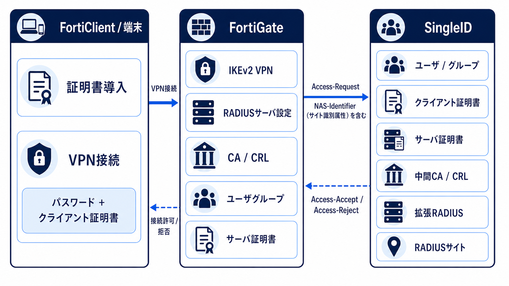
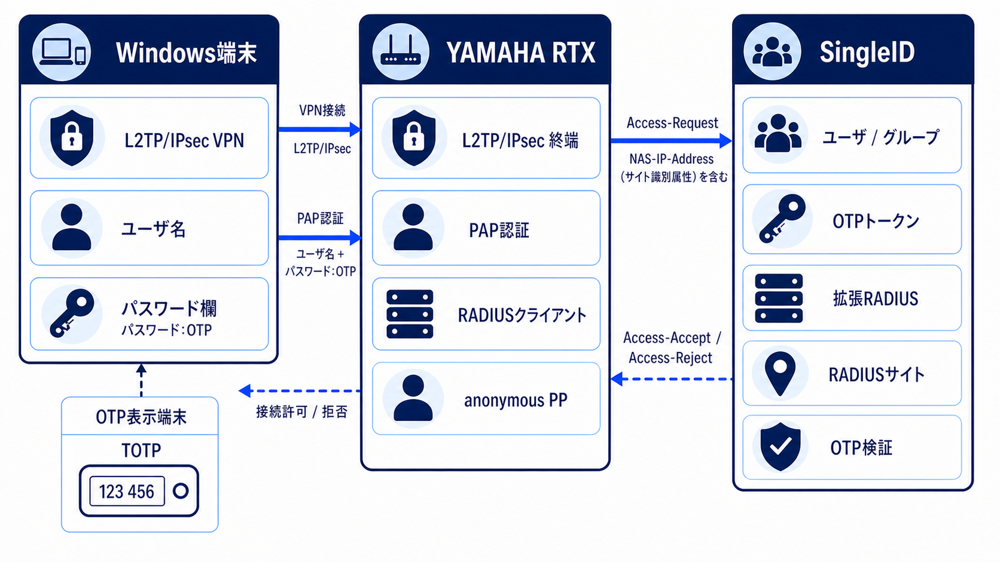
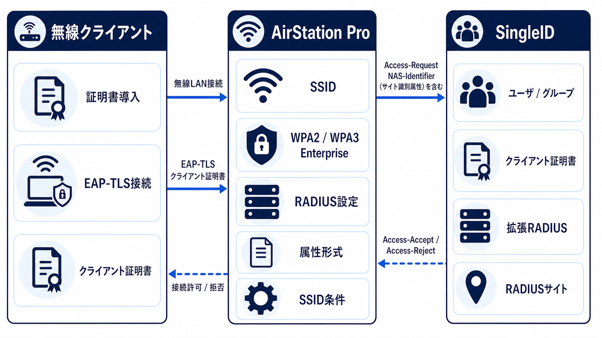
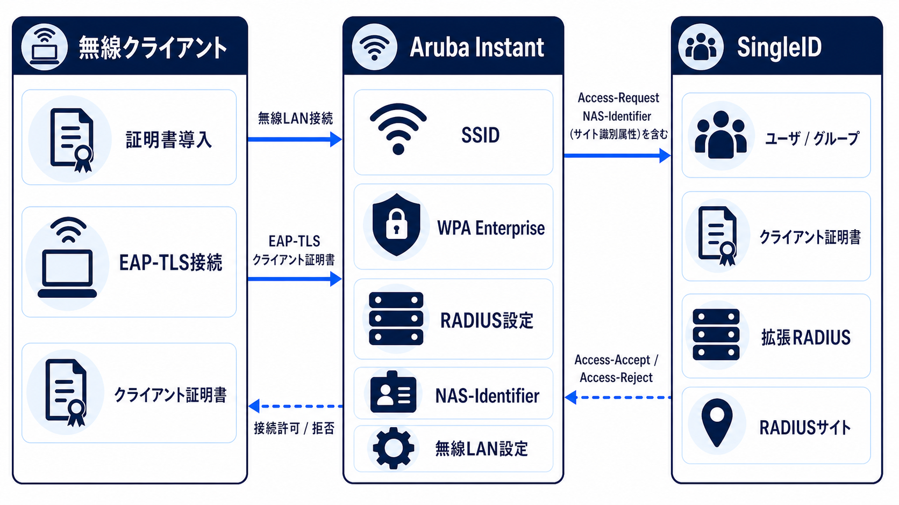
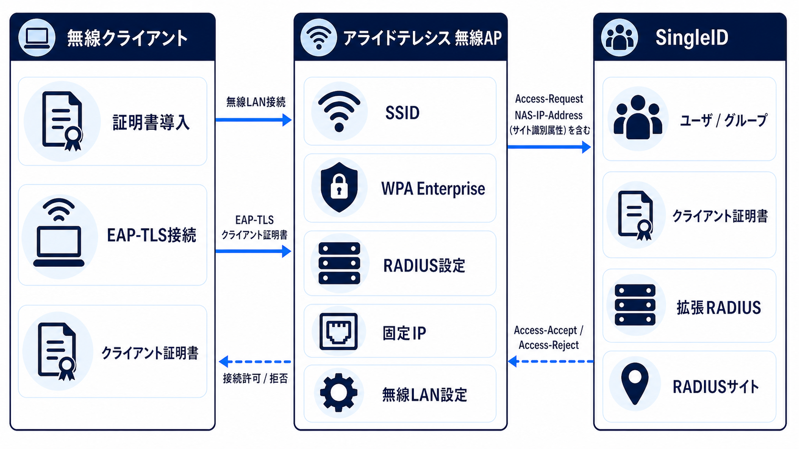

機器連携ガイド
VPN装置と無線APがSingleIDへ認証要求を送り、認証結果を端末へ返す流れを機種ごとに確認する。設定値や画面操作は、各ページの公式設定ガイドと副読本で確認する。
SingleID Device Integrations
VPN装置と無線APがSingleIDへ認証要求を送り、認証結果を端末へ返す流れを機種ごとに確認する。設定値や画面操作は、各ページの公式設定ガイドと副読本で確認する。
機器連携
VPN / FortiGate
FortiClientがFortiGateへVPN接続し、FortiGateがNAS-Identifierを含むAccess-RequestをSingleIDへ送る。SingleIDの応答はFortiGateを経由して端末へ戻る。設定ガイド: https://pubdocs.singleid.jp/singleid-pocguide/fortigate/vpn-group-password-cert-ikev2-adv/ ／ 副読本: FortiGate IKEv2 設定ガイド副読本

機器連携 / 1
VPN / YAMAHA RTX
Windows端末がYAMAHA RTXへ接続し、ユーザ名と、パスワード欄にパスワード:OTPを入力する。YAMAHA RTXはNAS-IP-Addressを含むAccess-RequestをSingleIDへ送り、認証結果を端末へ返す。設定ガイド: https://pubdocs.singleid.jp/singleid-pocguide/yamaha_rtx/vpn-group-otp-adv/ ／ 副読本: YAMAHA RTX L2TP/IPsec VPN OTP 設定ガイド副読本

機器連携 / 2
Wireless LAN / Buffalo AirStation Pro
無線クライアントがAirStation ProへEAP-TLS接続し、AirStation ProがNAS-Identifierを含むAccess-RequestをSingleIDへ送る。認証結果はAirStation Proを経由して無線クライアントへ戻る。設定ガイド: https://pubdocs.singleid.jp/singleid-pocguide/buffalo_airstation_pro/wlan-group-cert-adv/ ／ 副読本: Buffalo AirStation Pro EAP-TLS 設定ガイド副読本

機器連携 / 3
Wireless LAN / Aruba Instant
無線クライアントがAruba InstantへEAP-TLS接続し、Aruba InstantがNAS-Identifierを含むAccess-RequestをSingleIDへ送る。認証結果はAruba Instantを経由して無線クライアントへ戻る。設定ガイド: https://pubdocs.singleid.jp/singleid-pocguide/aruba_instant/wlan-group-cert-adv/ ／ 副読本: Aruba Instant EAP-TLS 設定ガイド副読本

機器連携 / 4
Wireless LAN / Allied Telesis AP
無線クライアントがアライドテレシス無線APへEAP-TLS接続し、無線APがNAS-IP-Addressを含むAccess-RequestをSingleIDへ送る。認証結果は無線APを経由して無線クライアントへ戻る。設定ガイド: https://pubdocs.singleid.jp/singleid-pocguide/allied_telesis_ap/wlan-group-cert-adv/ ／ 副読本: アライドテレシス無線AP EAP-TLS 設定ガイド副読本

機器連携 / 5